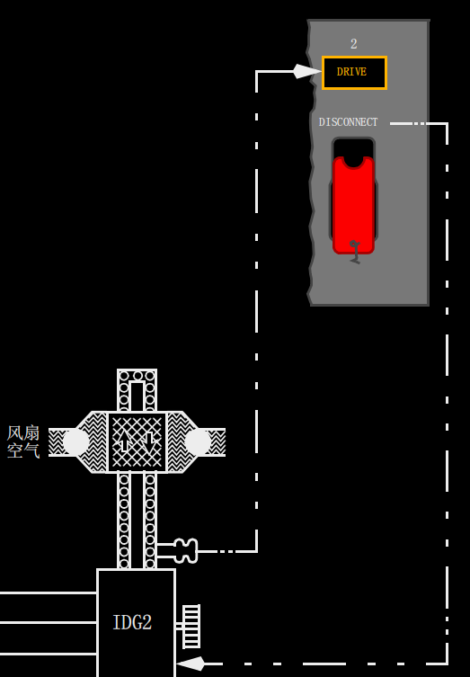
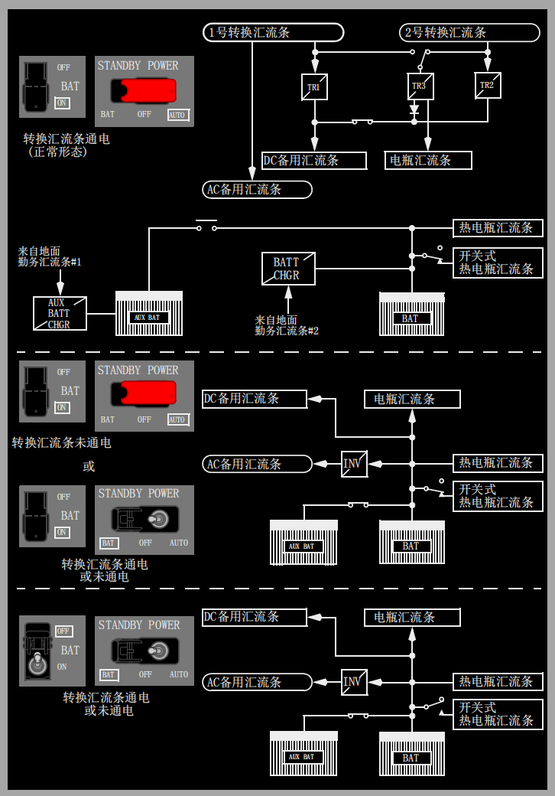
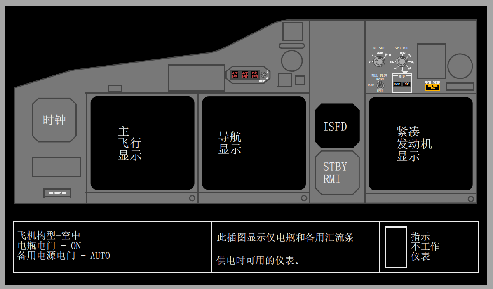
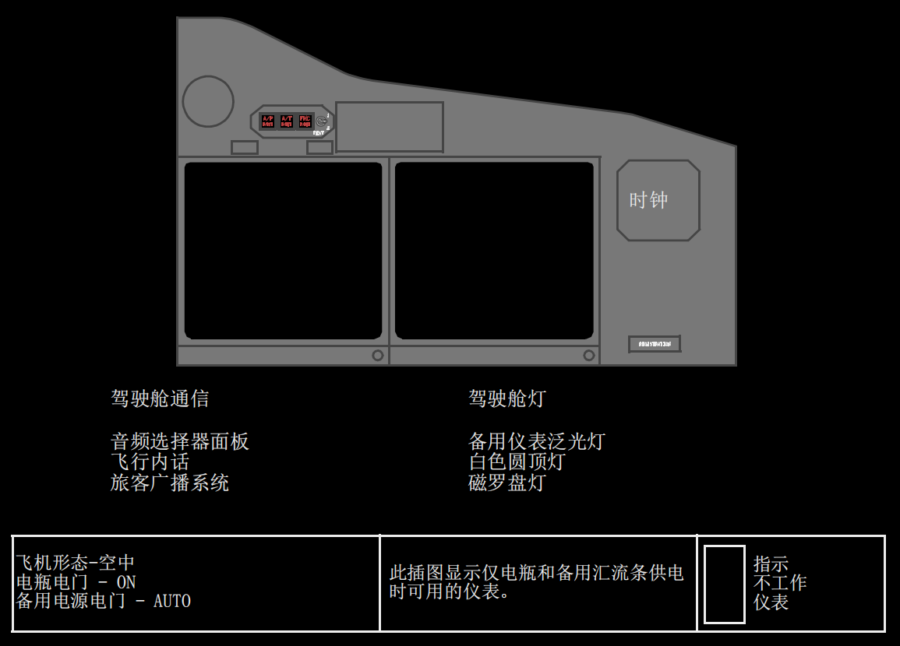

内部相关链接:
电源系统显示说明
电源系统设置面板说明
1 发电机驱动(DRIVE)指示灯
亮(琥珀色)-以下任何一种因素导致整体驱动发电机(IDG)滑油压力低：
• IDG失效
• 发动机停车
• 因滑油温度高导致IDG自动关断
• 通过发电机驱动断开(DISCONNECT)电门断开IDG。
2 发电机驱动断开(DISCONNECT)电门(带护盖)
如果电源可用，并且发动机起动手柄在慢车(IDLE)位时断开IDG。IDG不能在空中重新连接。
3 备用电源关断(PWR OFF)指示灯
亮(琥珀色)-以下一个或几个汇流条断电：
• AC备用汇流条
• DC备用汇流条
• 电瓶汇流条。
4 备用电源(STANDBY POWER)电门
AUTO(带护盖位)-
• 在空中或在地面，并且AC转换汇流条有电时：
• AC备用汇流条由AC转换汇流条1供电
• DC备用汇流条由变压整流器TR1、TR2和TR3供电
• 在空中或在地面，失去所有AC电源
• AC备用汇流条通过静变流机由电瓶供电
• DC备用汇流条由电瓶供电
• 电瓶汇流条由电瓶供电。
OFF(中立位)-
• 备用电源关断(STANDBY PWR OFF)指示灯亮
• AC备用汇流条、静变流机和DC备用汇流条没电。
BAT(不带护盖位)-
• AC备用汇流条通过静变流机由电瓶供电。
• DC备用汇流条和电瓶汇流条由电瓶直接供电。
发动机发电机
主电源由两台发动机驱动的IDG提供。IDG在整个发动机正常工作范围内保持恒定的发电机频率。一个集成电子 - 机械断开装置对IDG提供完全的机械隔离。
发电机驱动
整体驱动发电机(IDG)包括安装在一个共用机匣中的发电机和驱动装置，并由自带的滑油系统进行润滑和冷却。一个集成电子 - 机械断开装置对IDG提供完全的机械隔离。
当IDG感应到滑油压力低时，发电机驱动（DRIVE)琥珀色警戒灯亮。以下一种情况会导致IDG滑油压力低：
• IDG失效
• 发动机关车
• 因滑油温度高导致IDG自动关断
• IDG通过发电机驱动断开(DISCONNECT)电门断开。
安装了一个发电机驱动脱开电门。一旦发生发电机驱动故障，该驱动电门会断开发电机和发动机的连接。发电机的重新启动只能在地面由维护人员来实施。

单电瓶/双电瓶 (按选型)
主电源由两台发动机整体驱动发电机(IDG)供电，IDG提供三相、115伏、400赫兹的交流电。正常情况下，每台IDG向各自相应的汇流条系统供电，但当一台IDG失效时，另一台IDG有能力满足相反侧汇流条系统的重要和非重要的用电需求。变压整流器(TR)组件和一个电瓶/电瓶充电器提供DC电源。该电瓶还为AC和DC备用系统提供备用电源。(按选型，主电瓶和辅助电瓶还为AC和DC备用系统提供备用电源。)APU驱动一台发电机，可在地面或在空中向两个AC转换汇流条供电。
单电瓶(略)
双电瓶
两个24伏的镍镉电瓶，即主电瓶和辅助电瓶位于电子设备舱中。电瓶可向部分DC系统供电。当电瓶向备用系统供电时，辅助电瓶与主电瓶并联工作。在其它情况下，辅助电瓶与电源分配系统隔离。电瓶充电是自动控制的。两个充满电的电瓶足以提供至少60分钟的备用电源。电瓶电压范围为22-30伏。
两台发电机失效后，由电瓶供电的DC汇流条是：
• 电瓶汇流条
• DC备用汇流条
• 热电瓶汇流条
• 开关式热电瓶汇流条。
只要电瓶电门在ON位，开关式热电瓶汇流条就有电。
热电瓶汇流条始终与电瓶相连。在这个电路中没有电门。电瓶必须高于最低电压才能使该汇流条供电的组件工作。当探测到电瓶放电过量时，琥珀色的电瓶释放(BAT DISCHARGE)灯亮。
电瓶充电器变压器/整流器
单电瓶(选型略)
双电瓶
电瓶充电器旨在恢复并保持电瓶满电状态。主电瓶充电器由2号AC地面勤务汇流条供电。辅助电瓶充电器由1号AC地面勤务汇流条供电。
电瓶充电器提供可调节的电压输出以使电瓶充电量最大化。主充电循环完成后，主电瓶充电器恢复至恒压TR方式。在TR方式下，它为热电瓶汇流条和开关式热电瓶汇流条连接的设备负荷供电。如果TR3失效，则主电瓶充电器TR也为电瓶汇流条供电。如果1号AC转换汇流条或1号DC汇流条失去供电，AC和DC备用汇流条由主和辅助电瓶/电瓶充电器供电。
在正常工作情况下，辅助电瓶充电器和电瓶与电源分配系统隔离。当主电瓶向备用系统供电时，辅助电瓶和主电瓶相连以并联方式工作。
备用电源系统
正常操作
在失去所有发动机或APU驱动AC电源的情况下，备用系统向必要的系统提供115伏的AC和24伏的DC电源。备用电源系统包含：
• 静逆变器
• AC备用汇流条
• DC备用汇流条
• 电瓶汇流条
• 热电瓶汇流条
• 开关式热电瓶汇流条
• 主电瓶
• 辅助电瓶(按选型)。

在正常操作期间，带护盖的备用电源电门在自动(AUTO)位，电瓶电门在开(ON)位。这种形态可在部分电源失去时提供备用电源，并可在所有正常电源都失去时完全转换至电瓶电源。在正常条件下，AC备用汇流条由AC1号转换汇流条供电。直流备用汇流条由TR1、TR2和TR3供电;电瓶汇流条由TR3供电；热电瓶汇流条和开关式热电瓶汇流条由电瓶/电瓶充电器供电。
备用操作
单电瓶/双电瓶(按选型)
B-1745, B-2502, B-2503, B-2639, B-2640
备用电源的备用源是主电瓶和辅助电瓶(按选型)。在空中和地面，当备用电源电门在AUTO位时失去所有发动机或APU电源将会导致电瓶向备用负荷供电。交流备用汇流条由电瓶通过静变流机供电。DC备用汇流条、电瓶汇流条、热电瓶汇流条以及开关式热电瓶汇流条由电瓶直接供电。
备用电源电门为备用汇流条提供自动或人工电源控制。
电门在AUTO位时，如果失去1号AC转换汇流条或1号DC汇流条的电源，则会发生从正常电源到备用电源的自动转换。
将电门置于电瓶(BAT)位将超控自动转换，并使电瓶电源向交流备用汇流条、直流备用汇流条和电瓶汇流条供电。电瓶电门可以在ON位或OFF位。
如果电瓶电门在OFF位，则转换的热电瓶汇流条未通电。
(双电瓶)将备用电源电门置于OFF位将使交流备用汇流条和直流备用汇流条断电，并使备用电源关断(STANDBY PWR OFF)灯亮。
静变流机
在失去正常电源时，静变流机将24伏DC电源转换成115伏AC电源，以向AC备用汇流条供电。变流器的电源由顶板上备用电源电门和电瓶控制。
基本设备操作 - 机长仪表板
备用电源系统利用电瓶作为电源为下述飞行仪表供电。所有由备用电源供电的机长仪表都由备用电源整体照明。

基本设备操作 - 副驾驶仪表板
